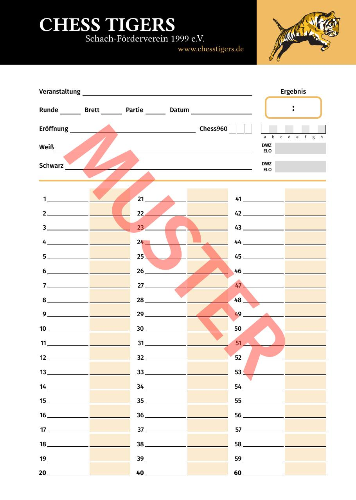
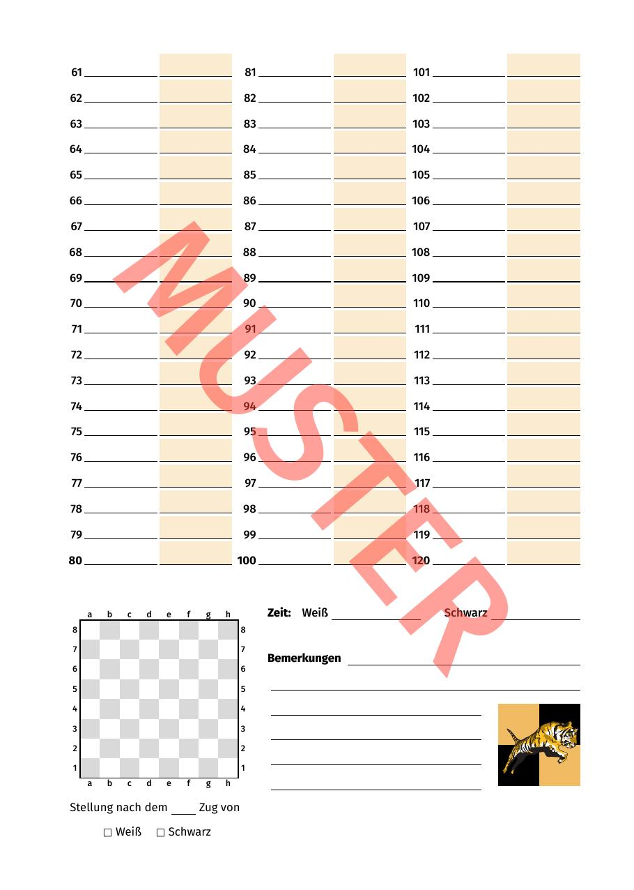
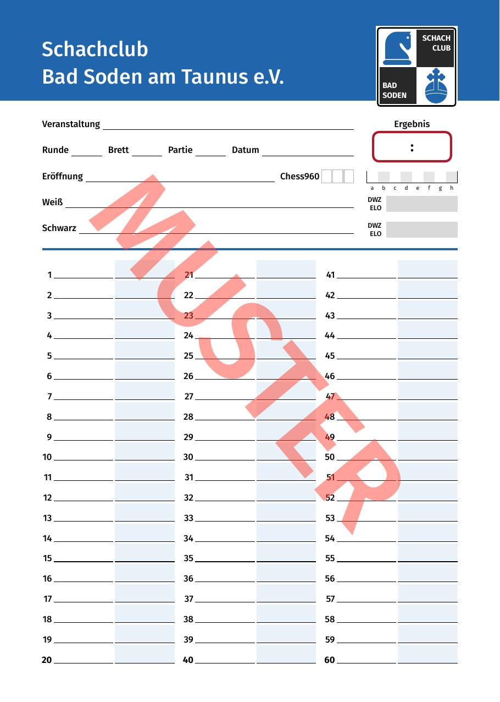
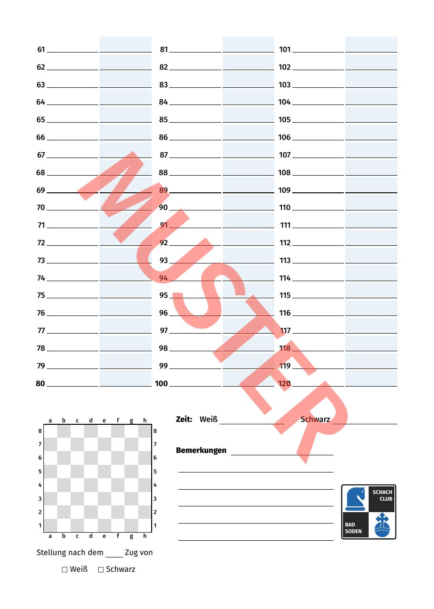

Beispiele
Formulardesigns
Eine Auswahl realisierter und konzeptioneller Entwürfe — von schlicht-funktional bis vereinsspezifisch gestaltet.
Realisiertes Projekt
Chess Tigers Schach-Förderverein 1999 e.V.


Chess Tigers – Vereinsformular
Zweiseitig · Zugliste bis Zug 120 · Stellungsdiagramm · DWZ/ELO-Felder · Chess960
Musterformular · Seite 1 & 2
Realisiertes Projekt
Schachclub Bad Soden am Taunus e.V.


Muster-Entwurf
Typ A

Typ A – Vereinsformular
Einseitig · Zugliste bis Zug 60 · Chess960 · DWZ/ELO · Stellungsdiagramm
Muster-Entwurf
Typ B (Amerikanisches Format)

Typ B – Vereinsformular
Einseitig · Zugliste bis Zug 60 · Chess960 · DWZ/ELO · Stellungsdiagramm